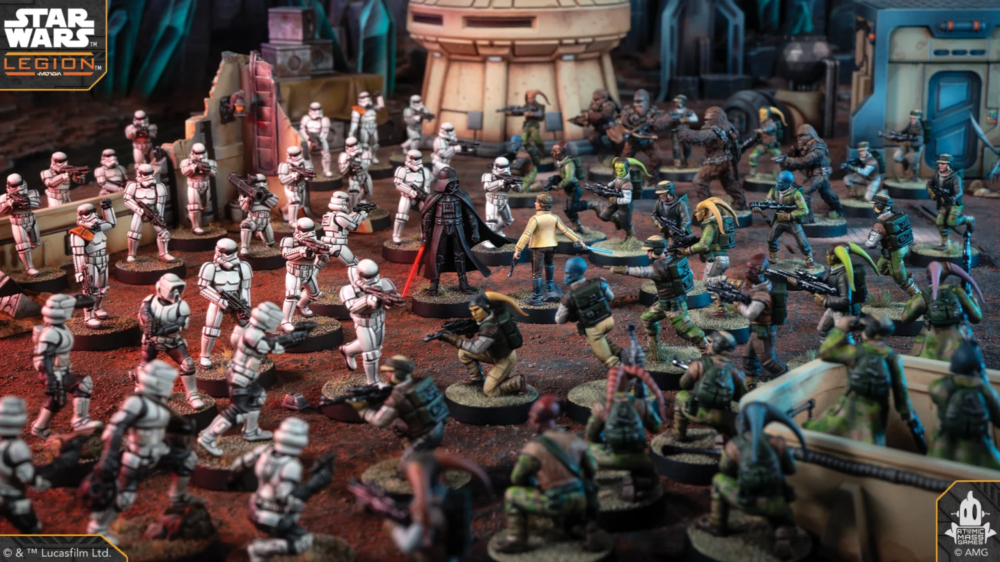

Star Wars: Legion
Star Wars: Legion is een wargame met miniaturen op een speeltafel. Elke speler stelt een leger samen, zet het op het terrein en speelt een scenario: je verplaatst eenheden met een meetlat, zoekt dekking achter ruïnes en rotsen, en laat dobbelstenen beslissen wie raak schiet.
Wat ik er zo goed aan vind: het is tactiek, planning en een beetje geluk, en je bouwt en schildert je leger zelf. Voor een grote Star Wars-fan is het de perfecte combinatie.

Alles over het spel, van regels tot nieuwe uitbreidingen, vind je op de officiële website van Star Wars: Legion.